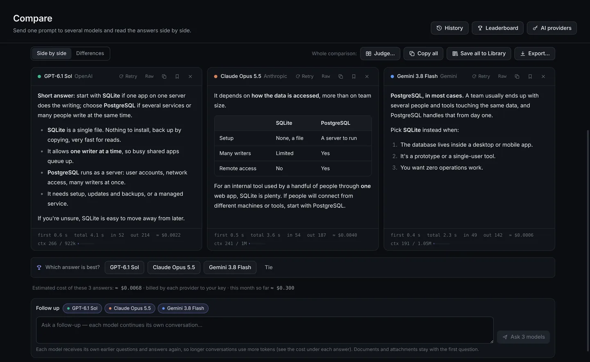
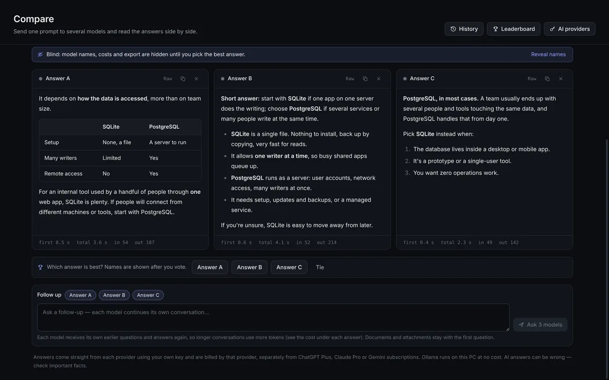
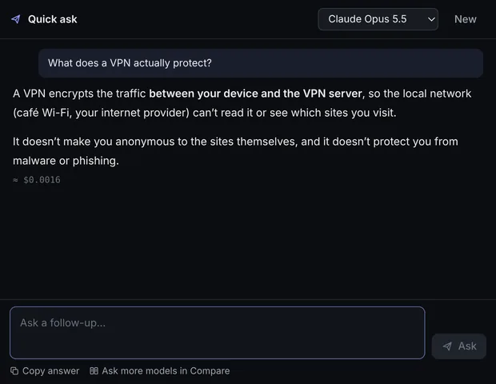
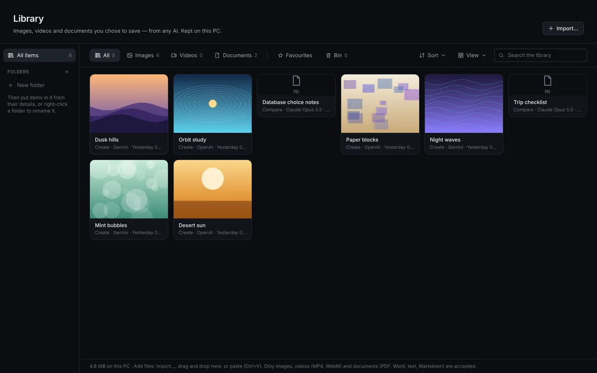

Welcome to sAInmore
One workspace. Every AI.
One question, several answers, side by side. A Windows app for people who use more than one AI. Open the official AI websites in split screen, or ask several models the same question at once and compare what they say. Free beta


Two ways to use several AIs at once
Use the AI websites you already pay for, or connect your own API keys. Or both. Neither is required to start.
The AI websites, in split screen
Open the official sites in tabs and see 2 to 8 of them at once, side by side or in a grid. Drag the dividers to resize.
- Built in: ChatGPT, Claude, Gemini, Copilot, Perplexity, Le Chat, DeepSeek and Grok.
- Add more from a reviewed list of AI services.
- Each service keeps its own sign-in, inside the app.
- Use voice mode on the AI websites. Each site asks before it can use your microphone.
- Save a split screen as a preset and reopen it with one click.
- Go full screen: the AI websites side by side, nothing else on screen.
Compare, through the official APIs
Type one question and send it to several models together, using your own OpenAI, Anthropic or Google Gemini keys, or free local models through Ollama.
- Answers stream in side by side, with a differences view.
- Ask follow-up questions; each model keeps its own conversation.
- Blind vote: pick the best answer before you see who wrote it, and build your own leaderboard.
- Optional AI judge, cost estimates, and a gauge showing how full each model’s context is.
- Export any comparison as a PDF, Markdown or JSON file.
- Web search and built-in tools when you want them.






And more
Quick ask
Press a hotkey in any app to ask one model a quick question in a small window.
Create
Make images with OpenAI or Gemini image models, side by side, using your own key.
Library
Keep the images, videos and documents you get from AI in one place, with folders and tags.
Prompts and personas
Save prompts with blanks to fill in, and personas with their own instructions and models.
Projects and History
File your work by project. Every comparison is saved and searchable. You can import your ChatGPT and Claude chat exports too.
Documents
Ask models about your own files, with optional search by meaning that runs on your PC.
Voice
Voice typing with a Whisper model that runs locally, and answers read aloud with Windows voices.
Backup and sync
Back up and restore your data, and sync it, encrypted, between your own PCs.
Code preview
Open HTML and SVG code from an answer in a sealed, offline preview window.
One-click updates
When a new version is out, click Update now, then Restart to update. Your data stays. The download is checked against GitHub’s copy, and nothing installs until you click.
Features page and tour
Every feature in one searchable list (F1), and a skippable one-minute tour after installing.
Your data is stored on your PC
- Your history, library, prompts and documents are stored on your PC. If you turn on Sync, encrypted copies also go to a sync folder you choose. There’s no sAInmore account and no sAInmore server.
- No telemetry, no tracking, no ads.
- API keys are encrypted by Windows and only sent to the provider they belong to.
- The app checks GitHub for a new version when it starts and every 6 hours while it runs. Nothing is downloaded or installed until you click Update now. You can turn the check off in Settings → About.
- Feedback is only sent when you choose to send it.
- It uses the official AI websites and official APIs only. It doesn’t scrape websites or type into them for you.
When you use an AI service, what you send goes to that service under its own terms. Full privacy notice
Download Free beta
For Windows 10 and 11, 64-bit (tested on Windows 11). The installer is on the release page on GitHub.
sAInmore-Setup-0.8.2.exe
Installer
Installs sAInmore for your Windows account, without admin rights, with Start menu and desktop shortcuts. Later versions install with one click from inside the app.
Windows will show a warning. Here’s why.
sAInmore isn’t code-signed yet. Code signing costs money each year and the app is a free beta. Because of that, Windows SmartScreen shows “Windows protected your PC” the first time you run it. To continue:
- Click More info.
- Check that the file name is
sAInmore-Setup-…exe. - Click Run anyway.
Only download sAInmore from the GitHub link on this page.
Questions
Do I need API keys?
No. The AI websites work with your normal sign-ins, including free accounts and subscriptions you already have.
API keys are only needed for Compare, Quick ask and Create. You can also use Compare with free local models through Ollama, without any key.
Does my ChatGPT Plus or Claude Pro subscription cover the API?
No. Website subscriptions and API billing are separate. Compare and Quick ask use your own API keys, and each provider bills you directly. sAInmore shows an estimated cost under each answer; your provider’s billing page has the exact amount.
Is it free?
Yes, sAInmore is free during the beta. The only costs are the ones you choose: AI subscriptions and API usage, paid to the providers.
Why does Windows warn me when I run it?
Because the app isn’t code-signed yet. Click More info, then Run anyway. More about this.
What happened to the portable version?
It’s retired from version 0.8.2, because it couldn’t update itself. If you used it, install with Setup: it uses the same data folder, so everything is still there.
Does sAInmore read or send messages on the AI websites?
No. The websites run in their own isolated windows inside the app. sAInmore doesn’t read what’s on them, type into them or send for you. To ask several models automatically, Compare uses the providers’ official APIs.
Which AI services can I add?
Only AI services. Besides the eight built-in ones, you can add services from a reviewed list in the app. sAInmore doesn’t open general websites.
Is there a Mac or Linux version?
Not at the moment. sAInmore is for Windows 10 and 11, 64-bit.
Wasn’t it called brAInsphere?
Yes, until October 2026. Installing sAInmore over brAInsphere keeps your data, settings and website sign-ins.
How do I report a problem or suggest something?
Use Feedback in the app’s sidebar. You decide what to include, and nothing is sent until you choose to send it.